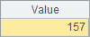
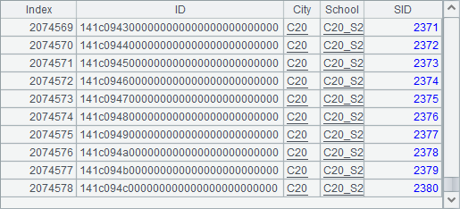

12.6.1 Data properties
The following plotting algorithm plots a polyline chart for Ana Silva¡¯s results of gym events:
|
|
A |
|
1 |
=canvas() |
|
2 |
=demo.query("select EVENT,SCORE from GYMSCORE where NAME='Ana Silva'") |
|
3 |
=A1.plot("BackGround") |
|
4 |
=A1.plot("EnumAxis","name":"x","allowRegions":false) |
|
5 |
=A1.plot("NumericAxis","name":"y","location":2,"autoCalcValueRange":false, "maxValue":15,"minValue":14,"allowRegions":false) |
|
6 |
=A1.plot("Line","axis1":"x","data1":A2.(EVENT),"axis2":"y","data2":A2.(SCORE)) |
|
7 |
=A1.draw@p(450,250) |
A1 creates a canvas. A2 retrieves data for chart plotting:

A3 plots the background. A4 plots an enumeration axis as the horizontal axis x. A5 plots a numeric axis as the vertical axis y and sets the maximum and minimum values on it. The Allow regions property for both the horizontal and vertical axes is set as false, which means the grid region on the background will not be plotted and enables a clear view for observing the plotting process.
The following part revolves around the line element plotted in A6. First look at A7¡¯s plotting result:

The line element needs at least two pairs of coordinates to be positioned. To define a pair of coordinates needs two logical axes, on which the logical coordinate values will be individually defined.

The logical coordinates A2.(EVENT) and A2(SCORE) are both set as sequences, each containing more than two members to plot multiple lines. You cannot plot a line element with only one pair of logical coordinates.